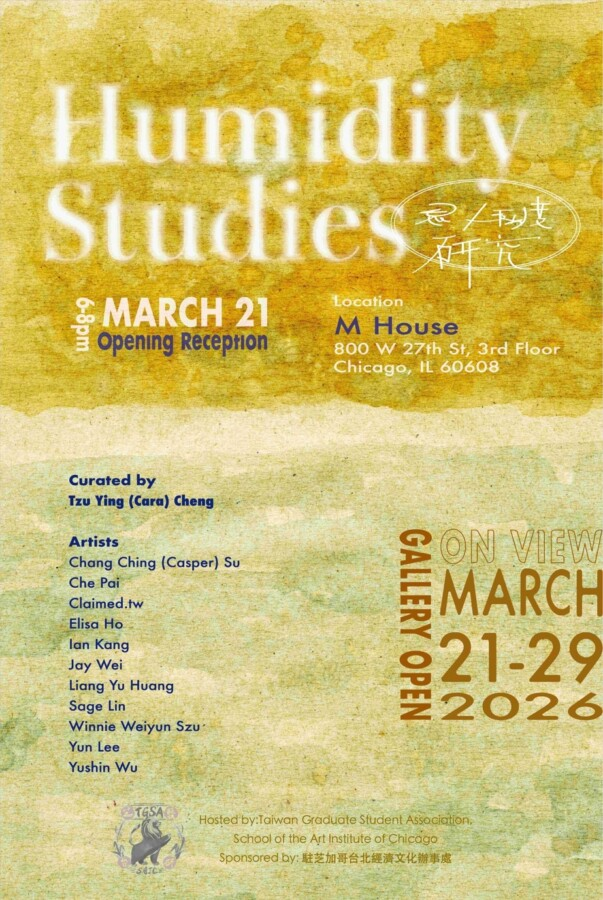

Humidity Studies｜思／私度研究
Humidity Studies｜思／私度研究 is a group show curated by Tzu Ying (Cara) Cheng, featuring 11 Taiwanese artists. The exhibition brings together immersive and interactive installations, digital games, video, textile, ceramic, and mixed-media works. By focusing on the body and emotion, the show repositions humidity as a condition that is perceived and lived, rather than simply a climatic one. The exhibition will be on view at M House in Chicago starting March 21, 2026.
The transition from Taiwan to Chicago is more than a change in physical location. By contrast between the two climatic conditions, the show encourages a new appreciation for memory, perception, and experience. While the humidity in Taiwan has long been a familiar condition, the dry and cutting climate of Chicago alters the everyday condition of living. In this regard, humidity is a metaphor for transition, between clarity and blur, and between tension and release.
The participating artists treat atmosphere as an experiential condition. Each work carries its own emotional density and sense of air, shaping the exhibition space into areas of varying intensity and rhythm. These subtle shifts echo the continuous changes of weather as well as internal states of feeling.
Artists
Chang Ching (Casper) Su, Che Pai, Claimed.tw, Elisa Ho, Ian Kang, Jay Wei, Liang Yu Huang, Sage Lin, Winnie Weiyun Szu, Yun Lee, YuHsin Wu
Humidity Studies｜思／私度研究
M House
800 W 27th St, Floors 2–3, Chicago, IL 60608